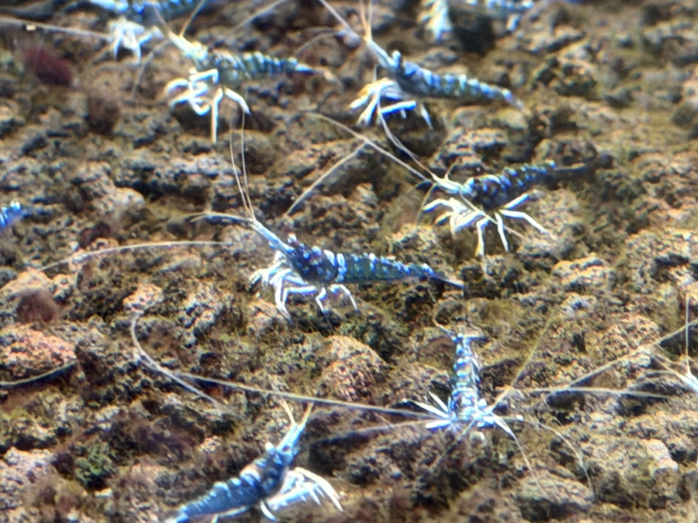

Caridina dennerli var.
金眼藍幽靈
Golden-Eye Blue Ghost
近距離觀察時，身體呈現冷冽的藍色金屬光澤；橘金複眼像兩枚微型寶石， 在黑色火山岩與深灰背景之間形成高辨識度對比。
- 品種名稱
- Caridina dennerli var. Golden-Eye Blue Ghost
- 稀有等級
- Masterpiece / 旗艦限定
- 飼養難度
- 2/10，新手友善
- 穩定紀錄
- 累代繁殖超過兩年